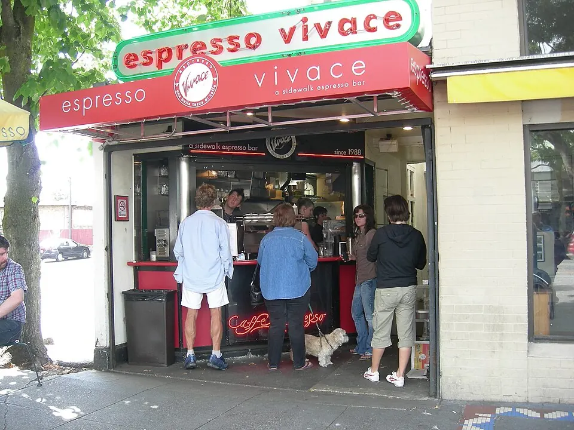
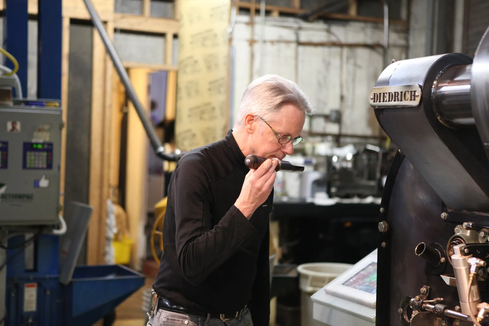
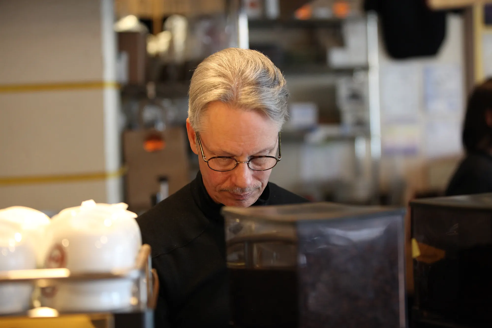
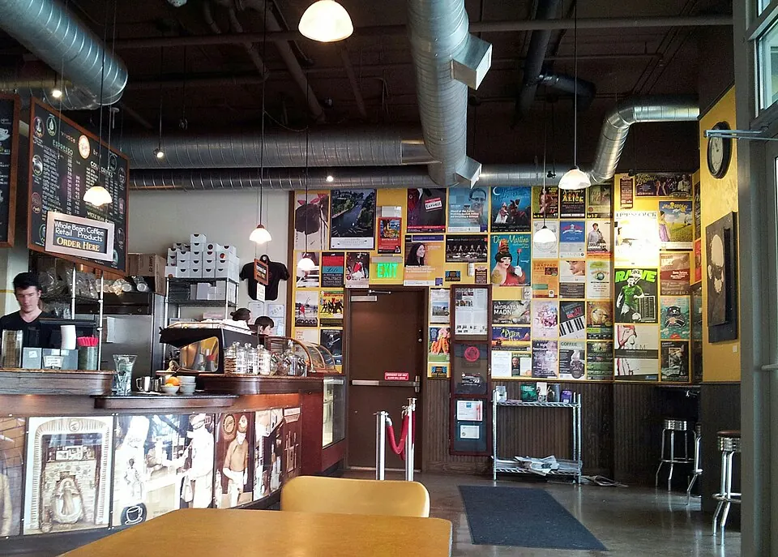
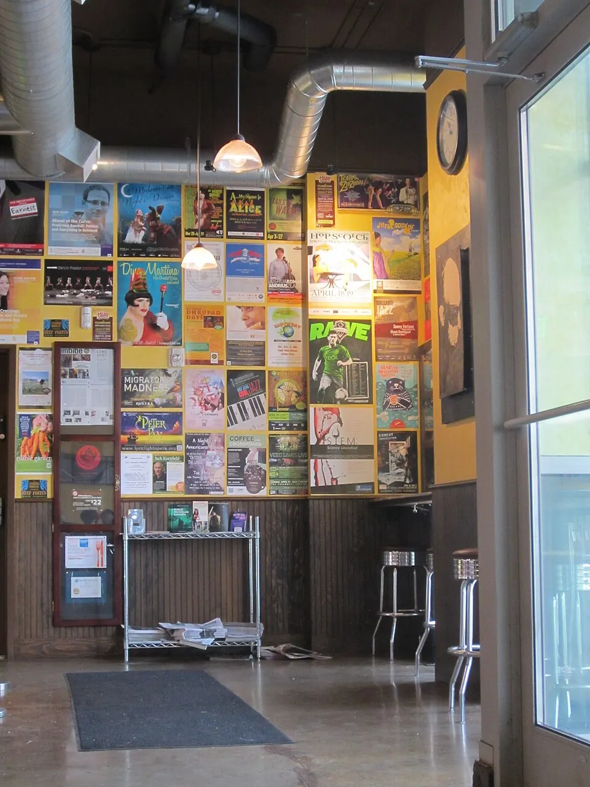
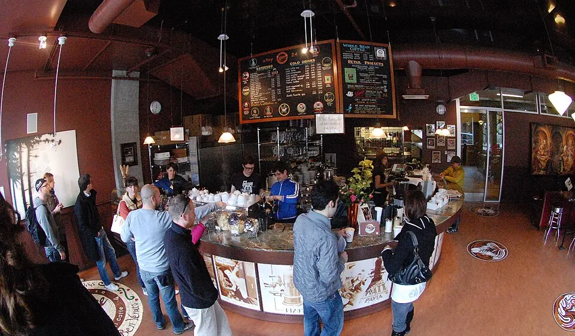
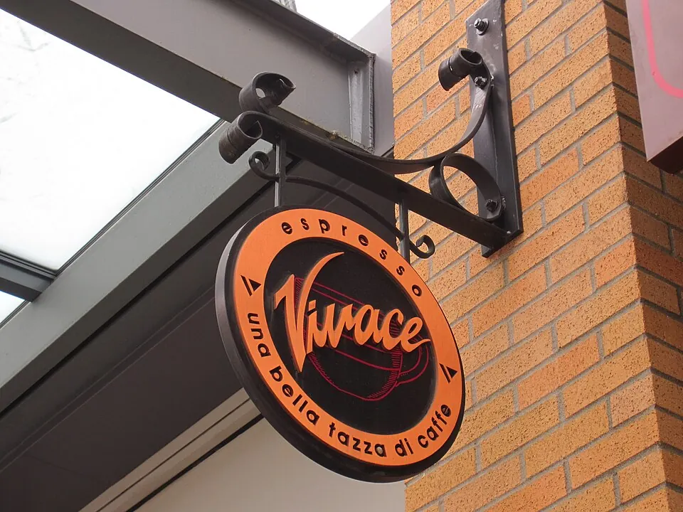

Espresso Vivace · Seattle · Since 1988
Absolute fidelity to a better cup.
An espresso bar and roaster on Capitol Hill and in South Lake Union. Founded by an engineer who measures everything.
Plan a visitI
It started as a cart at 5th and Union.
In 1988, David Schomer, a former Boeing metrologist, and Geneva Sullivan, a mainframe technician, opened a coffee cart downtown. The office crowd walked past without noticing what was in the cup.
So they moved up to Capitol Hill, where people did notice. A covered stand on Broadway became a neighborhood ritual for the next three decades.



II
A measurer behind the bar.
Schomer's trade was metrology: making sure a number means the same thing every time. He brought that to espresso. Vivace's grinders and machines run PID controllers, so the water holds one temperature, shot after shot.
The coffee is roasted in house. The method is written down.
"Schomer is as influential in the gourmet coffee world as Starbucks CEO Howard Schultz is in the mainstream coffee industry."
The Seattle Times
III
The pour.
Schomer is credited with developing and popularizing latte art in the United States.

This one is real. A latte at Vivace. Photo: Ron Diggity, CC BY 2.0.
IV
Posters, chalkboards, and a line out the door.
When the light rail came through, the flagship moved five blocks north on Broadway. The walls came too: decades of posters, a chalkboard menu, a long espresso bar you can watch from every seat.



38years
V
The method is in a book.
In 1996 Schomer published Espresso Coffee: Professional Techniques, still called the industry bible. He has trained hundreds of baristas who carried the method to coffee bars across the country.
You can buy the beans and the book from the roastery. Shop at espressovivace.com.
VI
Plan a visit.
